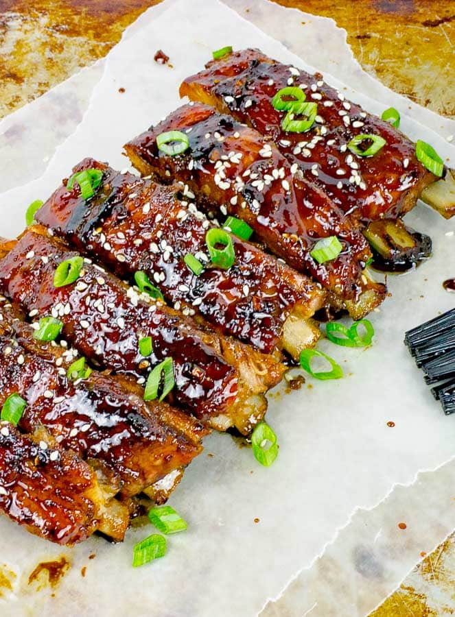

Sticky asian baked pork ribs

Description
I ADORE this flavor combination! Sweet and heat, especially with
an Asian twist, is one of my favorites. Combine that with sticky
and caramelized on these fall-off-the-bone, tender ribs and you
have absolute perfection.
One thing I really like about this rib method, other then the fact
that even my pickiest child will eat them, is that it is basically
a set-it and forget-it type of recipe. No babysitting required.
Ingredients
- 2.25 pounds baby back pork ribs
Brown Sugar Rib Rub
- 1/2 cup brown sugar
- 1/2 teaspoon kosher salt - course
- 1/2 teaspoon chipotle chili powder
- 1/2 teaspoon smoked paprika
- 1/2 teaspoon onion powder
- 1/2 teaspoon garlic powder
- 1/4 teaspoon cumin
Sticky Asian Sauce
- 1/2 cup soy sauce
- 1/3 cup brown sugar
- 1/4 cup honey
- 1 tablespoon rice wine vinegar
- 1 tablespoon ginger, fresh grated
- 2 teaspoons sesame oil
- 2 cloves garlic, finely minced
- 1/4 teaspoon crushed red pepper flakes
Steps
- Preheat the oven to 300 degrees Fahrenheit.
- On the back of the rack of ribs, score the white membrane in a
one inch diagonal pattern using a sharp knife or completely
remove the white membrane.
- Stir the brown sugar rib rub ingredients together in a small
bowl. Pat the rub mixture over the front and back of the slab
of ribs.
- Place the ribs meat side up on a baking sheet that has been
greased or lined with foil or parchment. Cover tightly with
foil.
- Bake the covered ribs for 2 - 2.5 hours. Test for tenderness
and if the meat is easily pulling away from the bone. Cook for
an additional half an hour if needed.
- Place the Sticky Asian Sauce ingredients in a small sauce pan.
Bring to a low boil and simmer for 5 minutes. Let the sauce
cool to thicken.
- When desired rib tenderness is reached, remove the foil.
- Turn the oven to broil. Brush the ribs with the Sticky Asian
Sauce. Broil for 2-3 minutes and then brush with sauce again.
Broil an additional 2-3 minutes until the sauce starts to
caramelize.
- Garnish with any left over sauce, sesame seeds, and sliced green
onions.